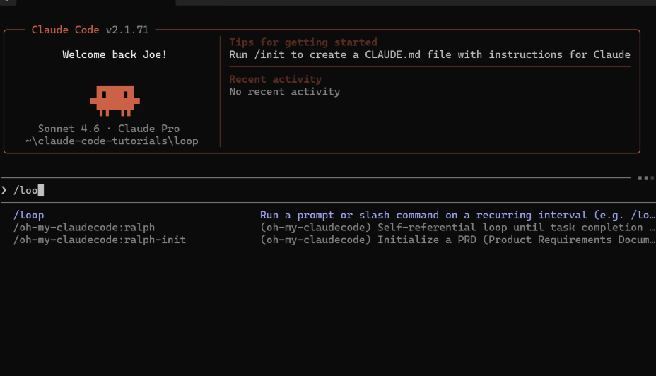
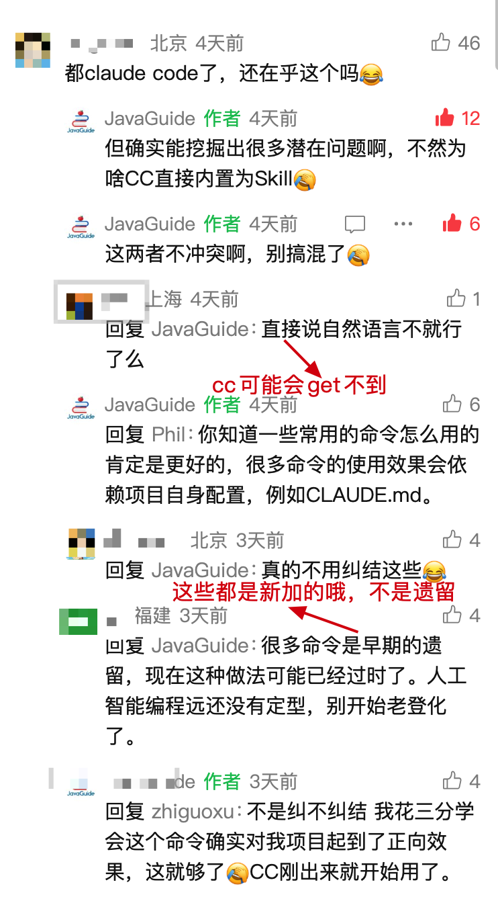

这是 Claude Code 之父认为最强大的两个命令之一，他多次分享推荐。我也是看他的分享才知道的。

说实话，确实好用，我用它干掉了一整个运维脚本。这个命令叫 /loop，可以帮你定时跑任务，也可以帮你反复试错直到把活干完。
大部分人对 Claude Code 的印象还停留在“一问一答”的模式——你写个需求，它给你代码，有问题你再贴回去。但 /loop 打破了这个模式：它可以自己跑、自己看结果、自己改、再跑一遍，直到任务完成。
下面聊聊这个命令到底能干什么，以及我在实际开发中怎么用它。
/loop 解决了什么问题
日常开发里有两类事特别烦人：
第一类是需要反复做的事。比如每隔半小时检查一下有没有新的 PR 需要处理、每天早上跑一遍测试看看有没有挂掉的、定时同步项目文档让文档和代码不脱节。这些事不难，但总忘。 第二类是需要反复试错的事。比如修复一个牵扯多个模块的 Bug、把整个项目从 CommonJS 迁移到 ESM、实现一个新功能并确保所有测试通过。这种任务的特点是：一次做不完，中间会出错，出错了要改，改完再验证。
/loop 把这两类事都接过去了。
/loop 是 Claude Code 内置的调度工具，版本要在 v2.1.72 以上才行。不确定的话终端跑一下 claude --version，版本低了就 npm install -g @anthropic-ai/claude-code 升一下。
三种调度方式怎么选？
Claude Code 不止 /loop 这一种定时机制，它实际上有三套调度方案，各有各的定位：
| Cloud 任务 | Desktop 任务 | /loop | |
|---|---|---|---|
| 运行位置 | |||
| 需要开机吗 | |||
| 需要打开会话吗 | 需要 | ||
| 重启后还在吗 | 不在 | ||
| 能访问本地文件吗 | |||
| MCP 服务器 | |||
| 最小间隔 |
一句话选型：要可靠、不想管机器 → Cloud 任务；要读本地文件 → Desktop 任务；临时轮询、快速用一下 → /loop。
/loop 的两种工作模式
模式一：定时调度（Cron 模式）
这是最直观的用法——告诉它“干什么”和“隔多久干一次”，到点它自己跑：
# 每 30 分钟跑一次代码审查
/loop 30m /review
# 每小时检查一次有没有挂掉的测试
/loop 1h "跑一遍单元测试，看看有没有失败的"
# 每 5 分钟看一眼 PR 动态
/loop 5m "检查 GitHub 上开放的 PR 状态"
指定具体时间也行，比如工作日早上 9 点自动生成变更摘要：
/loop "每个工作日 9:00" "检查昨天的代码变更，生成项目变更摘要"
间隔写法有三种：
/loop 30m 检查构建状态 | ||
/loop 检查构建状态 every 2 hours | ||
/loop 检查构建状态 |
时间单位支持 s（秒）、m（分）、h（小时）、d（天），秒会向上取整到分钟。写了 7m 或 90m 这种不能整除的值，Claude 会自动帮你取整并告诉你实际间隔。
/loop 也能定时调用其他 Skill，比如每 20 分钟对某个 PR 跑一轮 review：
/loop 20m /review-pr 1234
效果跟你手动输入 /review-pr 1234 一样，只是它到点自己跑。
模式二：自主迭代（Agentic Loop）
这个模式下 /loop 不再是定时器，而是“自动试错引擎”。你给它一个目标，它自己规划、执行、验证、修正，循环往复直到目标达成。
# 修复认证模块所有失败的测试
/loop "修复 auth 模块里所有失败的单元测试，直到全部通过"
# 大规模技术栈迁移
/loop "把 src/legacy 下所有组件迁移到 Tailwind CSS，确保页面渲染正常"
# 实现新功能并写好测试
/loop "实现支付宝支付模块，补上单元测试，确保全部通过"
普通模式下 Claude 写完代码就交给你了，报错你得自己贴回去。/loop 模式下，它自己读报错、自己改、自己重跑测试，全程不用你盯着。
一次性提醒
如果只用一次，不必 /loop，自然语言描述时间和任务就行：
# 下午 3 点提醒我推分支
下午 3 点提醒我推送 release 分支
# 45 分钟后帮我看看集成测试过了没
45 分钟后检查集成测试是否通过
Claude 会把时间对齐到一个具体分钟跟你确认，跑完自动删除，不会留垃圾任务。
五个实际场景
结合我自己的用法和社区反馈，这几个场景用 /loop 最合适：

1. 自动监控 PR 状态。
每 5 分钟拉一次开放的 PR，检查有没有冲突、能不能安全合并、生成摘要。不用自己反复刷页面了。
/loop 5m "用 gh 命令检查开放 PR 的状态，标记有冲突的和可以安全合并的"
2. 自动测试看门狗。
定时跑测试，发现了失败的测试就尝试修。多人协作的项目里特别实用——别人合进来的代码可能悄悄搞挂了你的模块。
/loop 2h "运行测试套件，发现失败的就修复"
3. 定时同步项目文档。
改了代码忘了改文档，这是开发者最常犯的错。每 2 小时让 /loop 扫一遍代码变更，自动把改动同步到用户文档里。
/loop 2h "检查最近的代码变更，更新对应的公开文档"
4. 大规模技术迁移。
这类任务最适合自主迭代模式。比如把整个项目从 CommonJS 迁到 ESM，几十个文件，中间一定会有报错。/loop 能自己处理这些错误，一个文件一个文件地改过去。
/loop "把项目里所有 CommonJS 的 require/module.exports 改成 ESM 的 import/export，确保测试全部通过"
5. 批量拉起自动化任务。
可以写一个自定义命令文件（比如 init-loops.md），把所有定时任务列在里面。项目启动时跑一条命令就能把所有自动化任务一起拉起来。
怎么管理正在跑的任务？
直接用自然语言跟 Claude 说就行，不用记命令：
# 看看现在有哪些任务在跑
我现在有哪些定时任务？
# 不需要了，停掉
停掉那个检查部署的任务
底层靠三个工具干活：
CronCreate | |
CronList | |
CronDelete |
每个任务有个 8 位 ID，一个会话最多同时跑 50 个任务。
运行机制
了解几个细节，用起来更顺手：
空闲时才触发。 调度器每秒检查一次有没有到期任务，但只在 Claude 空闲时才触发。如果你正在跟它对话，任务会排队等当前这轮结束再跑。错过的不会补——只触发一次。
时间是本地时区。 所有时间都按你本机时区解析。0 9 * * * 就是你当地的早上 9 点，不是 UTC。
有抖动机制。 防止所有用户任务在同一时刻砸向 API。每个任务会被加上一个小的确定性偏移：
循环任务：最多延迟周期的 10%，上限 15 分钟。比如每小时的 job，可能在整点到 :06之间的某个时刻触发。一次性任务：设在整点或半点的，最多提前 90 秒触发。 同一个任务每次的偏移量是一样的（由任务 ID 决定）。
需要精确触发的话，建议避开 :00 和 :30，写成 3 9 * * * 比 0 9 * * * 更准时。
Cron 表达式参考。CronCreate 接收标准 5 字段格式：分 时 日 月 星期。
*/5 * * * * | |
0 * * * * | |
7 * * * * | |
0 9 * * * | |
0 9 * * 1-5 | |
30 14 15 3 * |
星期字段 0 和 7 都是周日，1-6 是周一到周六。不支持 L、W、? 和名称别名（MON、JAN 等）。
注意事项
/loop 好用，但有几点要心里有数：
Token 消耗不低。 特别是自主迭代模式，每循环一次都要读上下文、跑工具、分析结果，是 Claude Code 里比较烧 Token 的用法。目标太模糊的话，它可能在同一个问题上打转，白白烧钱。指令尽量具体，完成标准要明确（比如“所有测试通过”）。 任务有保质期。 循环任务创建 7 天后自动过期，会最后执行一次然后自行删除。被遗忘的 loop 最多跑 7 天。需要更长周期的，用 Cloud 或 Desktop 的定时任务。 只在当前会话有效。 关掉终端或退出 Claude Code，所有任务都没了，不会跨重启保留。所以它不是 CI/CD 的替代品，而是开发过程中的省力工具。 建议加上限。 目标一直达不到它会一直跑。在指令里加一句“最多尝试 10 次”之类的约束，避免无限循环。 可以完全禁用。 设置环境变量 CLAUDE_CODE_DISABLE_CRON=1可以关掉整个调度器，/loop和 cron 工具都会不可用。
/loop 和其他命令的配合
一个比较高效的工作流是这样的：
/loop自动完成一个复杂功能并通过测试。/simplify对产出的代码做一轮清理和优化。/review做最终的安全审查。
三步走下来，基本不用你插手。
关于 simplify 命令，可以看这篇文章的详细介绍： Claude Code simplify 代码审查命令代码优化实战。
这篇文章评论区我没删，但有些人认为这些命令没用我听费解的，说实话。就不说 Claude 之父和很多技术大佬都力荐这些小工具了。你就单纯通过自然语言对话，尤其是中文，真的很难发挥出 CC 完全的实力。而且，这些命令，你知道有就行了，压根也不用记，不用背啊，我一个斜杠 / 不就出来了么？你还要吭哧吭哧打半天字。

/loop 适合什么场景
适合的：
需要反复试错的任务——修复跨模块 Bug、大规模重构、迁移。 需要定时执行的任务——监控 PR、跑测试、同步文档。 完成标准明确的任务——“所有测试通过”、“0 个 lint 错误”。
不太适合的：
探索性的任务——比如“帮我调研一下某某框架好不好”，没有明确的完成标准。 需要人工判断的任务——比如架构选型、需求分析。 对 Token 预算敏感的场景—— /loop是比较烧 Token 的用法之一。
简单说：如果一件事你手工做也是“跑一下 → 看报错 → 改 → 再跑”这个循环，那它就适合交给 /loop。
⭐️推荐阅读: